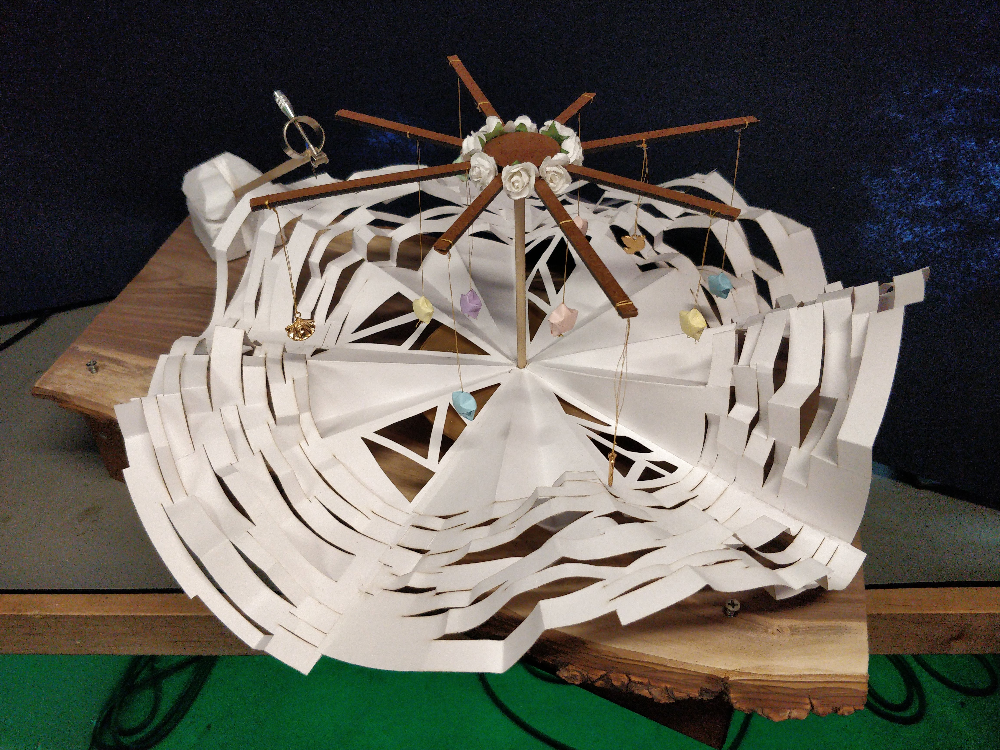
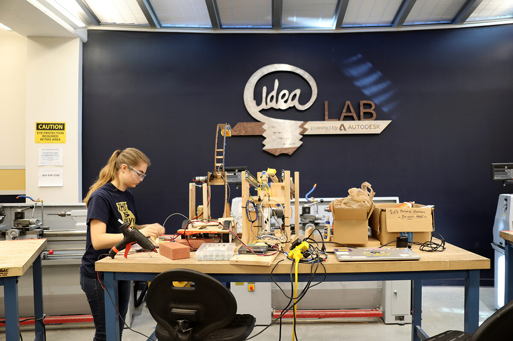
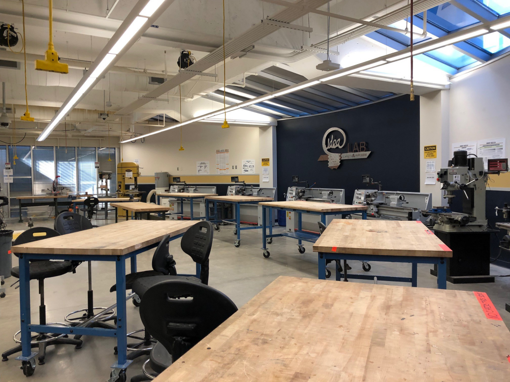
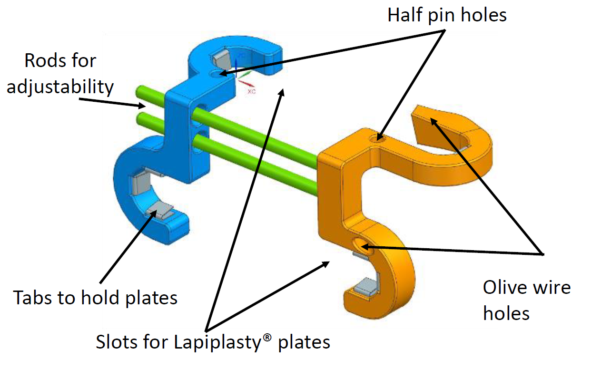
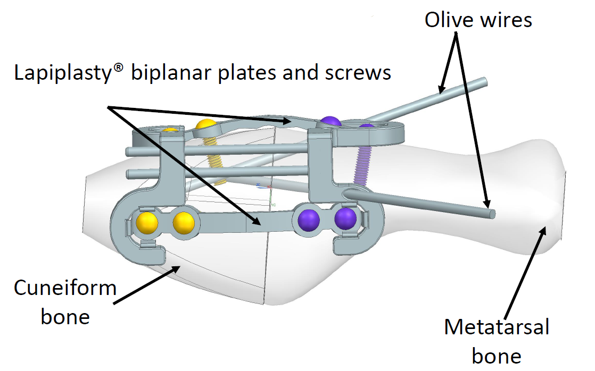
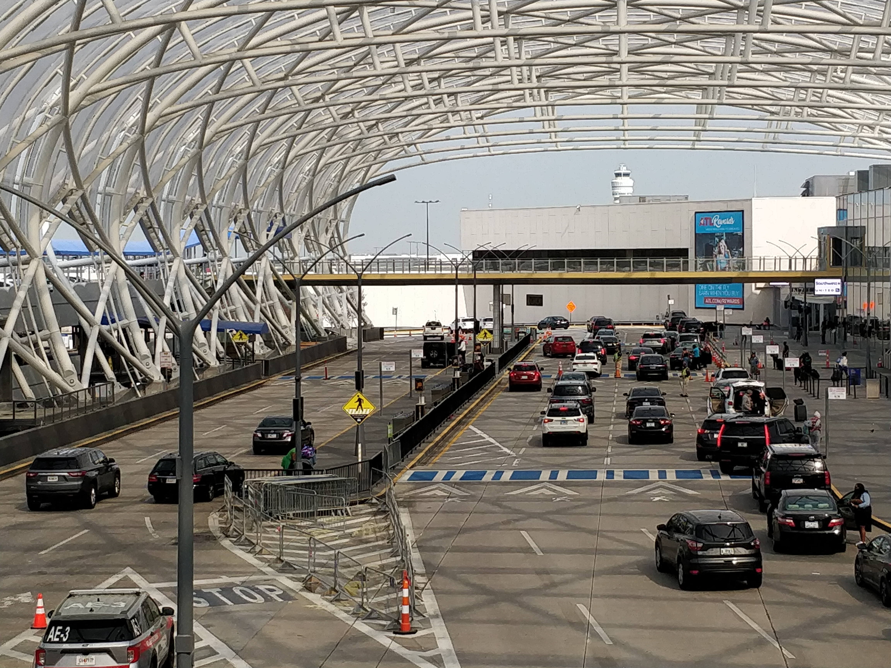
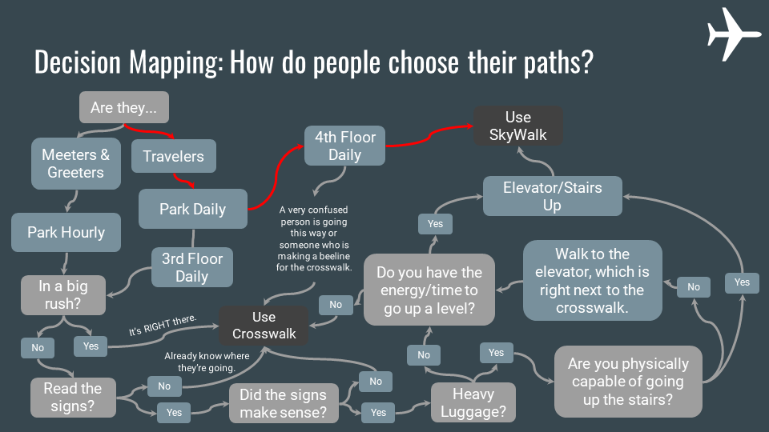
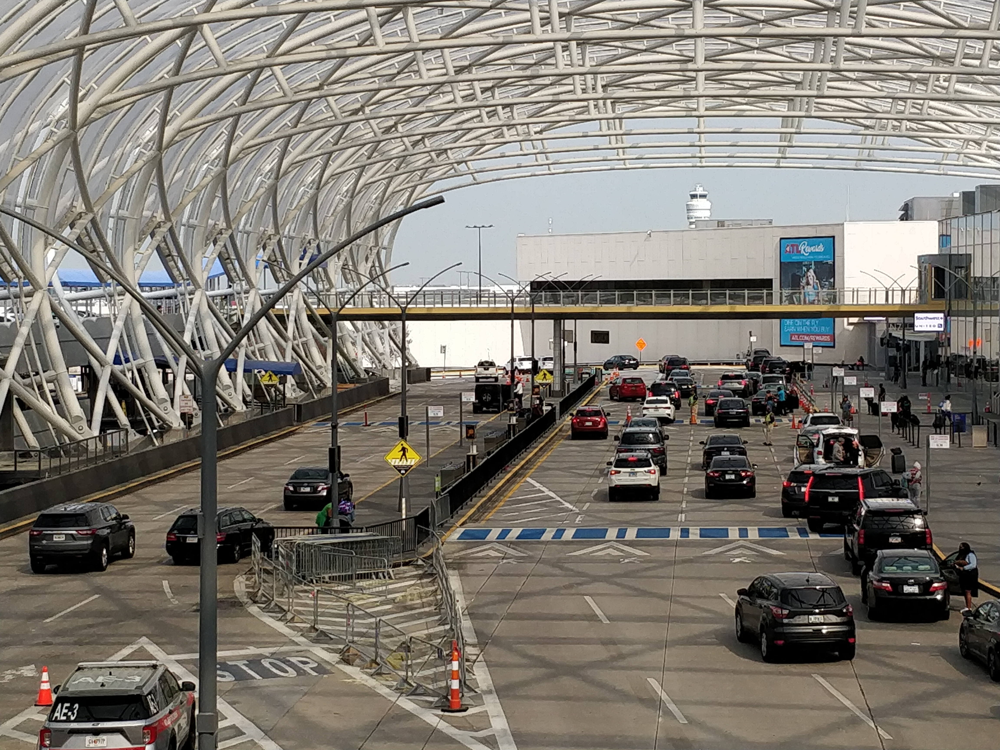
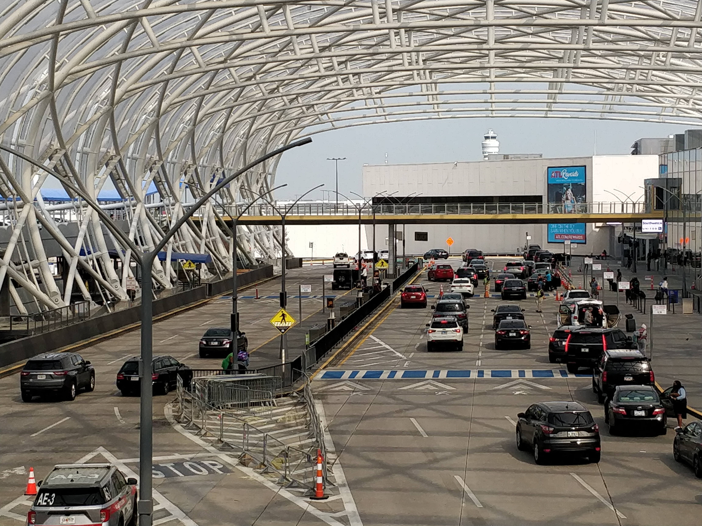

The final project in ME 6407 Robotics was an open prompt to take the concepts learned in class and apply them to a robotics project.
My partner and I decided to take a 6DOF robot arm, apply the trajectory planning techniques learned in the course, and have it build a
tower using toy wooden blocks.
The robot arm was controlled using serial communication to send commands from the Arduino UNO to the servo controller board. MATLAB was
used to implement a Newton-Raphson code that calculated the necessary angles of each joint in our robot model in order to reach desired
endpoint configurations. These waypoints were inputted, angles outputted, and a path linearly interpolated between each configuration.
The desired joint angles were then converted to servo values on the Arduino and sent to the robot.
This class was an amazing learning experience, covering topics such as trajectory planning, robot dynamics, and system controls. This
project was also a great opportunity to practice upon the mechatronics and microcontroller knowledge I'd learnt in ME 6705.
Playing the Pirates of the Caribbean Theme during the Horizons Expo

The HexLabs Horizons Make-a-thon is an
event similar to a hackathon where teams make creative projects in a short marathon. For Horizons, teams were given 24 hours to
create any project of their choosing that combined arts and tech. My friends and I decided to compete in 2022 as a team of four
in the physical track, creating a tangible artistic project blending arts and tech.
We created a musical carousel, roughly modeled off a vinyl player, using a combination of woodworking, origami,
and mechatronics. After selecting and playing a song from Spotify, a computer accesses the Spotify API to retreive data
on the song, such as tempo, volume, timbre, and more. Using MATLAB, the spin speed, LED light colors, and LED light patterns
on the carousel are modified in time with the music data from the API. The physical sculpture's base is built using a laser cutter in
combination with woodworking techniques. It houses the microcontroller and mechatronics components. The spinning disk, evoking both a
carousel and vinyl disk, was made using a laser cutter and origami techniques. While we all had a hand in almost every part of the project,
I worked most on structural base with woodworking and laser cutter, as well as using the lathe for some components and assembling mechatronics.
Our team won 1st place in the physical track category, as well as the People's Choice Award. The project was a fun opportunity
to combine my passion for the arts with tech. While we originally had even higher aspirations for the project, conceiving and creating a
working idea within 24 hours was a big challenge. We spent it furiously creating and prototyping within the school makerspace (and sleeping very little).
The final project in ME 6705 Mechatronics was to create a PID controlled line following robot. The course involved a circuit with
one end a semi-circle and one end a 90-degree corner. I used the MSP432 microcontroller by Texas Instruments and an IR sensor. Using
my knowledge of the MSP432 and IR sensor documentation, I designed a circuit layout to power all the neccessary peripherals. The overall
control is a nested PID control - one for controlling the robot position over the line and two more for controlling the speeds of each
motor based on encoder feedback. This project allowed me to improve upon skills I hadn't had a chance to use
often throughout the course of my ME degree, such as circuit design and systems control.


IDEA (Invent, Design, Educate, Actualize) Laboratory, Makerspace for ME 2110
I competed in the 2022 SICPEA competition as a part of a team comprised of current/former Head TAs for ME 2110.
We'd noticed through our time as Head TAs that there was gender inequity in the training curriculum and equipment layout in
the course makerspace. Since part of our team comprised of then current Head TAs and gender equity researchers, we were able to conduct a small
informal study in the class through a survey to support our proposal. Together we also completed extensive literature review regarding
self-efficacy, gender inequity, and engineering makerspaces.
Our proposal was two-fold: create a demographic-inclusive library of training videos and improve PPE and workshop layouts.
Through our survey and literature review, we found that a self-efficacy gap between women and men, even when they have the same
ability level, contributes to lower retention rates and numbers for women in STEM. Women are more likely to have less technical
experience entering the class and thus less likely to engage in technical aspects of the class. Creating an accessible library of
training materials with demographic role models has been shown to both improve student learning outcomes and self-efficacy of minorities
in literature. In addition, many makerspaces tend to use a one-size-fits all mentality with PPE and workstations. This poses a risk
for those of smaller stature, such as women. On average, gloves, safety glasses, tools, and workspace heights are sized for the
average man, creating numerous safety risks for women in technical fields. Providing a wide variety of PPE sizes and adjustable workstations
not only improves safety for all, but creates a more welcoming environment for everyone.
With these proposals, our team won first place in the competition. We were given the opportunity to present our proposal to the
Dean of the College of Engineering at Georgia Tech and other staff members to bring the inequity to their attention.
as a part of ID 4833 - Collaborative ID Capstone Summer 2021
Interactive Workshop Activities for Visual Interviewing
As a part of my industrial design minor's capstone course, my teammate and I conducted several collaborative
interviews and design sessions to find a problem and prototype a solution for someone with mild cognitive impairment (MCI).
It was a great experience to mesh together a variety of different skillsets I'd learned throughout the years
and put them to the test. The class worked in conjunction with the Cognitive Empowerement Program (CEP), a joint
program hosted by Emory University’s Brain Health Center and the Georgia Institute of Technology. Through CEP,
each team was paired with a member with mild cognitive impairment (MCI) and their care partner. Two Interactive
workshops were held, one to conduct an interactive visual interview, and another as a collaborative prototyping session.
Through our interviews, we discovered that the person we'd been paired with struggled with remembering to take their medication
each day, which day it was, and whether to take the morning or evening pills. Since CEP focused on empowering their members, we
wanted to give back some autonomy to our member rather than having them rely on their care partner to take the correct pills. Through
the collaborative prototyping session, we settled on various features and forms they'd prefer and unearthed more needs than they'd
said in the first interview. Through this experience, I was able to practice interviewing and needfinding skills not usually
emphasized in mechanical engineering coursework.
Automatic Pill Dispenser Prototype
Our final solution was an automatic pill dispenser and alarm clock that would dispense the correct set of pills at the correct time
while alerting the CEP member it was time to take their medication. We used a cuckoo clock dispensing method as they'd said the care
partner would take care of loading the medication due to its importance and that the CEP member preferred taking the pills from a small cup.
The prototype dispensed the pill cup using a servo with a cam arm hooked up to an Arduino UNO. It also included an LCD screen to
simulate the clock function and a LED light and buzzer to simulate the alarm function.
Since my partner in the class took the lead on our interview workshop materials and presentation materials, I took the lead on
design and prototyping. I created a CAD model in SolidWorks, laser cut the pieces out of pine plywood, wrote the code, and assembled the prototype. Together we
fine-tuned parts of the design, and my partner took charge in polishing up the final form and stain.
As a part of a different class, ME 6101 - Engineering Design, I was tasked with writing a journal article
by applying a class concept towards any random topic or past project. I chose to write about this capstone
project and leveraging Use Case UML (unified modeling language). You can read that paper here.
as a part of ME 4723 - Interdisciplinary Capstone Design Spring 2021


Alignment Tool CAD Model with Lapiplasty® Tools
For my mechanical engineering capstone class, I joined an interdisciplinary team of mechanical and biomedical engineers to
work on a surgery alignment tool for a bunion correction surgery called Lapiplasty®. Bunions can cause significant pain for
some people while walking and standing. While most bunion correction surgeries are merely cosmetic - shaving off part of the
bone and not correcting the underlying issue - and have a high probability of relapse, Lapiplasty® corrects the joint
misalignment itself, a better and more long-lasting solution. The surgery involves realigning the joint itself and using two
alignment plates to secure the joint in its proper alignment. However, the plates involved drilling in screws perpendicular and
offset from one another. Doctors frequently accidentally drill into another screw, requiring re-drilling and lengthening surgery time.
Due to this problem, surgeries and training take longer, making Lapiplasty® a less commonly available surgery despite its
benefits for the patient. To help combat this problem, my team created an adjustable solution to align with the existing plates and tools
of Lapiplasty® to ensure the screws are properly offset from each other with the first try. We worked with Treace Medical Concepts Inc.,
the company that created Lapiplasty®, to learn more about the surgery and develop an idea.
Unfortunately, this project occured during the height of the COVID-19 pandemic, so our project was completed virtualy, only extending
through CAD modeling and simulations without reaching the physical prototyping stage. We conducted literature reviews, research into foot
anatomy, and market research to support our solution. My role on the team primarily consisted of CAD modeling and FEA simulations
using Siemens NX. We conducted deformation, stress, and thermal FEA on our solution. At the end of the semester, we presented our
solution to Treace Medical Concepts Inc. and a variety of faculty and companies at a virtual Capstone EXPO. You can find our Capstone EXPO
poster here to see more details of our work.

Atlanta Airport SkyWalk & Crosswalk at North Terminal
This project was a very interesting and notable experience as mechanical
engineering coursework usually doesn't involve field research. I had a lot of fun going out of my comfort zone in the lab to research
and interview people at the Hartsfield-Jackson Atlanta Airport. In ID 3320, the class partnered with the Atlanta Airport to conduct
wayfinding research in the North Terminal. The Atlanta Airport wanted to encourage more people to use the recently installed SkyWalk bridges
rather than the crosswalk to traverse from the parking deck to the North Terminal for safety and traffic control.
We visited the North Terminal numerous times over the course of several weeks to collect data for this project.
To find out how people navigated the terminal and why users chose the crosswalk or the bridge, first canvased the area, creating a
map of the parking deck layout and available wayfinding signs. We then interviewed a variety of users, first inside the terminal, then
on each of the SkyWalks. We began to notice a pattern that the users of the SkyWalk tended to be those parked in more long term parking,
as those were the decks on the same floor as the SkyWalk, while hourly parking was on the same level as the crosswalk. We also noticed
that some of the SkyWalk signage and navigation in the parking deck was ambiguous and would often result in users using the crosswalk anyways.
To support these findings, we requested a years worth of parking data from the Atlanta Airport. I wrote a MATLAB script to analyze all
365 Excel sheets full of each parking transaction, extracting data on the number of hourly vs. daily visitors the airport saw each month.
This data, along with a decision map we created from out qualitative findings, showed that the majority of traffic was funneled through
hourly parking each day, the floor parked most closely to the crosswalk, and that navigating to the SkyWalk was an ordeal for most users.
We presented our findings to the Atlanta Airport at the end of term, and they were impressed with our findings and data collection.
Based on our findings, we made suggestions for potential solutions to the airport. In contrast to the design problems I'm usually
presented with in my mechanical engineering experience, this class allowed me to learn how to approach a problem with an open
mind to gather data and discover the needs of the user.

Decision Mapping of SkyWalk Wayfinding at the Atlanta Airport


 
